AA fidelity; non-AA coverage; Hausdorff samples ≤0.25px. Process RSS sampled every 2ms. Timings include machine noise. Compare equivalent color counts before interpreting node rankings.
Image
SSIM A → B
ΔE00 A → B
Nodes A → B
Colors A / B
Gaps B
Flags
circle_r50
0.991211 → 0.993190
0.65188 → 0.62905
18 → 16
2 / 2
0
Previews: circle_r50 (Hausdorff B Some(0.36038093338950017), corner recall B Some(1.0))
ABB minus input (absolute)
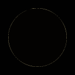
square_rot30
0.973256 → 0.997821
0.58034 → 0.25273
52 → 12
2 / 2
0
Previews: square_rot30 (Hausdorff B Some(0.4061432166430424), corner recall B Some(1.0))
ABB minus input (absolute)
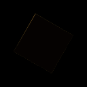
star5
0.968495 → 0.996496
1.14242 → 0.76128
94 → 44
2 / 2
0
Previews: star5 (Hausdorff B Some(0.6466503308025472), corner recall B Some(1.0))
ABB minus input (absolute)
ring
0.973277 → 0.990036
1.11752 → 0.85864
32 → 28
2 / 2
0
Previews: ring (Hausdorff B Some(0.5123814425656993), corner recall B Some(1.0))
ABB minus input (absolute)
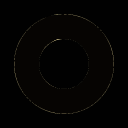
concentric
0.927862 → 0.976262
1.60321 → 0.87896
46 → 940
4 / 4
0
nodes
Previews: concentric (Hausdorff B Some(0.8178202311411062), corner recall B Some(1.0))
ABB minus input (absolute)
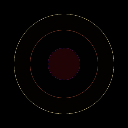
junction_t
1.000000 → 1.000000
0.00000 → 0.00000
12 → 12
3 / 3
0
Previews: junction_t (Hausdorff B Some(7.105427357601003e-14), corner recall B Some(1.0))
ABB minus input (absolute)
junction_y
0.936020 → 0.974523
1.29196 → 0.52374
33 → 13
3 / 3
0
Previews: junction_y (Hausdorff B Some(0.7056831724994196), corner recall B Some(1.0))
ABB minus input (absolute)
line_1px
1.000000 → 1.000000
0.00000 → 0.00000
12 → 12
2 / 2
0
Previews: line_1px (Hausdorff B Some(5.859285502108464e-14), corner recall B Some(1.0))
A
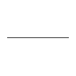
BB minus input (absolute)
line_2px
1.000000 → 1.000000
0.00000 → 0.00000
12 → 12
2 / 2
0
Previews: line_2px (Hausdorff B Some(5.859285502108464e-14), corner recall B Some(1.0))
A
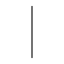
BB minus input (absolute)
checker
1.000000 → 1.000000
0.00000 → 0.00000
20 → 20
2 / 2
0
Previews: checker (Hausdorff B Some(6.029155041345697e-14), corner recall B Some(1.0))
ABB minus input (absolute)
diagonal_touch
1.000000 → 1.000000
0.00000 → 0.00000
20 → 20
2 / 2
0
Previews: diagonal_touch (Hausdorff B Some(5.5495161716881504e-14), corner recall B Some(1.0))
ABB minus input (absolute)
nested_squares
1.000000 → 1.000000
0.00000 → 0.00000
28 → 28
3 / 3
0
Previews: nested_squares (Hausdorff B Some(7.105427357601003e-14), corner recall B Some(1.0))
ABB minus input (absolute)
bezier_leaf
0.958004 → 0.984693
1.26780 → 0.98305
22 → 22
2 / 2
0
Previews: bezier_leaf (Hausdorff B Some(1.035864386319523), corner recall B Some(0.8333333333333334))
ABB minus input (absolute)
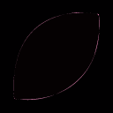
rounded_rectangle
0.981199 → 0.999458
0.50361 → 0.16992
76 → 36
2 / 2
0
Previews: rounded_rectangle (Hausdorff B Some(0.43573054422276497), corner recall B Some(1.0))
ABB minus input (absolute)
ellipse
0.974863 → 0.995198
0.58731 → 0.32156
18 → 16
2 / 2
0
Previews: ellipse (Hausdorff B Some(0.569031866606419), corner recall B Some(1.0))
ABB minus input (absolute)
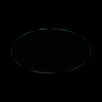
text_path
0.963427 → 0.988254
1.04993 → 0.61608
77 → 32
2 / 2
0
Previews: text_path (Hausdorff B Some(0.5423095199969791), corner recall B Some(1.0))
ABB minus input (absolute)
triangles
0.960767 → 0.990407
0.97032 → 0.59316
74 → 28
3 / 3
0
Previews: triangles (Hausdorff B Some(2.014269996060847), corner recall B Some(0.7))
ABB minus input (absolute)
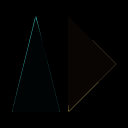
circle_noaa
0.976676 → 1.000000
0.37217 → 0.00000
18 → 476
2 / 2
0
nodes
Previews: circle_noaa (Hausdorff B Some(0.8178202311411062), corner recall B Some(1.0))
ABB minus input (absolute)
multicolor_logo
0.992378 → 0.996848
0.20578 → 0.13275
41 → 40
5 / 5
0
Previews: multicolor_logo (Hausdorff B Some(0.4958924647423916), corner recall B Some(1.0))
ABB minus input (absolute)
jpeg_q60
0.973839 → 0.976443
0.91351 → 0.88451
18 → 14
2 / 2
0
Previews: jpeg_q60 (Hausdorff B Some(0.44817291794104336), corner recall B Some(1.0))
ABB minus input (absolute)
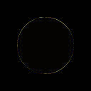
logo_original_1
0.983897 → 0.979181
4.47856 → 4.45809
37 → 34
2 / 2
0
Previews: logo_original_1 (Hausdorff B Some(0.659042001518033), corner recall B Some(1.0))
ABB minus input (absolute)
logo_original_2
0.984266 → 0.979643
4.51337 → 4.49175
37 → 34
2 / 2
0
Previews: logo_original_2 (Hausdorff B Some(0.6590416383078276), corner recall B Some(1.0))
ABB minus input (absolute)
logo_original_3
0.973964 → 0.977564
4.64396 → 4.53485
37 → 36
2 / 2
0
Previews: logo_original_3 (Hausdorff B Some(5.513333638509131), corner recall B Some(0.9285714285714286))
ABB minus input (absolute)
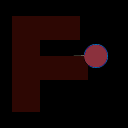
logo_original_4
0.975023 → 0.975754
4.62750 → 4.55435
41 → 36
2 / 2
0
Previews: logo_original_4 (Hausdorff B Some(8.917761751832002), corner recall B Some(0.9285714285714286))
ABB minus input (absolute)
logo_original_5
0.974543 → 0.979132
4.75831 → 4.61600
38 → 34
2 / 2
0
Previews: logo_original_5 (Hausdorff B Some(0.9300003051757813), corner recall B Some(1.0))
ABB minus input (absolute)
edge_1x1
0.406869 → 1.000000
45.81052 → 0.00000
0 → 4
0 / 1
0
nodes
Previews: edge_1x1 (Hausdorff B None, corner recall B None)
ABB minus input (absolute)
edge_transparent
1.000000 → 1.000000
0.00000 → 0.00000
0 → 0
0 / 0
0
Previews: edge_transparent (Hausdorff B None, corner recall B None)
ABB minus input (absolute)
edge_uniform
1.000000 → 1.000000
0.00000 → 0.00000
4 → 4
1 / 1
0
Previews: edge_uniform (Hausdorff B None, corner recall B None)
ABB minus input (absolute)
edge_1xn
1.000000 → 1.000000
0.00000 → 0.00000
4 → 4
1 / 1
0
Previews: edge_1xn (Hausdorff B None, corner recall B None)